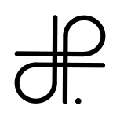

September 2020
 @dplaindoux
interface Point {
var x: Int; var y: Int
fun move(dx: Int, dy: Int): Point {
this.x += dx; this.y += dy; return this
}
}
Affaiblissement du type de this à Point dans la fonction move !
A propos de l'usage de l'objet courant dans les expressions et
son type dynamique associé dans les signatures
Etude de cas en Kotlin
interface Point {
val x: Int; val y: Int
fun new(x: Int, y: Int): Point // Approche immutable
fun move(dx: Int, dy: Int): Point = new(x + dx, y + dy)
fun equal(p: Point): Boolean = p.x == x && p.y == y
}
interface Point<Self> {
val x: Int; val y: Int
fun new(x: Int, y: Int): Self
fun move(dx: Int, dy: Int): Self = new(x + dx, y + dy)
fun equal(p: Self): Boolean = ???
}
interface Point<Self : Point<???>> {
val x: Int; val y: Int
fun new(x: Int, y: Int): Self
fun move(dx: Int, dy: Int): Self = new(x + dx, y + dy)
fun equal(p: Self): Boolean = p.x == x && p.y == y
}
interface Point<Self : Point<Self>> {
val x: Int; val y: Int
fun new(x: Int, y: Int): Self
fun move(dx: Int, dy: Int): Self = new(x + dx, y + dy)
fun equal(p: Self): Boolean = p.x == x && p.y == y
}
final class YPoint(
override val x: Int,
override val y: Int
) : Point<YPoint> {
override fun new(x: Int, y: Int): YPoint = YPoint(x, y)
}
interface PointColore<Self : PointColore<Self>> : Point<Self> {
val c: Int
override fun equal(s: Self) = s.x == x && super.equal(s)
}
final class YPointColore(
override val x: Int,
override val y: Int,
override val c: Int
) : YPoint(x,y), PointColore<YPointColore> {
override fun new(x: Int, y: Int) = YPointColore(x, y, c)
}
YPointColore ne peut hériter de YPoint
Ne peut implémenter Point<YPoint> et Point<YPointColore>
final class YPointColore(
override val x: Int,
override val y: Int,
override val c: Int
) : PointColore<YPointColore> {
override fun new(x: Int, y: Int) = YPointColore(x, y, c)
}
YPoint est un sous type de Point<YPoint>
YPointColore est un sous type Point<YPointColore>
fun <P : Point<P>> List<P>.move(dx: Int, dy: Int) = this.map {
it.move(dx, dy)
}
fun main() {
val p = YPoint(0, 0)
val cp = YPointColore(0, 0, 0)
val l : List<YPointColore> = listOf(cp).move(1,2)
cp.equal(p) ❌ // YPoint ≰ YPointColore
p.equal(cp) ❌ // YPointColore ≰ YPoint
}
Pas de relation explicite entre YPointColore et YPoint
interface Point<Self: Point<Self>> { ... }
∀ t ⊆ F[t].σ
Contravariance du paramètre et covariance du résultat
interface PointColore<Self : PointColore<Self>> : Point<Self> {
val c: Int
override fun equal(s: Self) = s.x == x && super.equal(s)
}
Redéfinition par covariance des paramètres acceptée
Problématique des "catcalls" (Changed Availability or Type)
class Counter {
var value:Int
init(_ value:Int = 0) {
self.value = value
}
func increment() -> Self {
self.value += 1
return self // Mutation ...
}
}
class Counter {
let value:Int
func increment() -> Self {
return type(of:self).init(self.value + 1) // Immutable
}
required init(_ value:Int = 0) {
self.value = value
}
}
protocol Point {
var x : Int { get }
var y : Int { get }
func equal(p:Self) -> Bool
func move(dx: Int, dy: Int) -> Self
init(x: Int, y:Int) // Spécification du constructeur
}
extension Point {
func equal(p:Self) -> Bool {
return x == p.x && y == p.y
}
func move(dx: Int, dy: Int) -> Self {
return type(of: self).init(x: x + dx, y : y + dy)
}
}
protocol PointColore where Self: Point {
var c : Int { get }
}
extension PointColore {
func equal(p:Self) -> Bool {
return c == p.c && x == p.x && y == p.y
}
}
class YPoint : Point {
let x: Int; let y: Int
required init(x: Int, y:Int) { self.x = x; self.y = y }
}
class YPointColore : YPoint, PointColore {
let c : Int
required init(x: Int, y: Int) {
self.c = 0; super.init(x: x, y: y)
}
}
Relation explicite entre YPointColore et YPoint
func main() {
let p = YPoint(x: 0, y: 0)
let pc = YPointColore(x: 0, y: 0)
let _ = pc.equal(p: p) ❌ // Cannot convert value ...
let _ = p.equal(p: pc) // Appel equal de Point
let _ = [p, pc].map { e in e.move(dx: 1, dy: 2) }
}
Pas de redéfinition mais deux définitions distinctes de equal
trait Monoid {
fn neutral() -> Self;
fn add(&self, s: &Self) -> Self;
}
impl Monoid for i32 {
fn neutral() -> Self { // Self ≡ i32
0
}
fn add(&self, p: &Self) -> Self {
self + p
}
}
trait Point {
fn x(&self) -> u32;
fn y(&self) -> u32;
fn init(&self, x: u32, y: u32) -> Self;
fn move_it(&self, dx: u32, dy: u32) -> Self
where Self: std::marker::Sized {
self.init(self.x() + dx, self.y() + dy)
}
fn equal(&self, p: &Self) -> bool {
self.x() == p.x() && self.y() == p.y()
}
}
trait PointColore where Self: Point {
fn c(&self) -> u32;
fn equal(&self, p: &Self) -> bool {
self.c() == p.c() && Point::equal(self, p)
}
}
struct YPoint { x: u32, y: u32 }
impl Point for YPoint {
fn x(&self) -> u32 { self.x }
fn y(&self) -> u32 { self.y }
fn new(&self, x: u32, y: u32) -> Self {
YPoint { x, y }
}
}
struct YPointColore { p: YPoint, c: u32 }
impl Point for YPointColore {
fn x(&self) -> u32 { self.p.x }
fn y(&self) -> u32 { self.p.x }
fn new(&self, x: u32, y: u32) -> Self {
YPointColore { p: YPoint { x, y }, c: self.c() }
}
}
impl PointColore for YPointColore {
fn c(&self) -> u32 { self.c }
}
fn main() {
let p1 = YPointColore { p: YPoint { x: 0, y: 0 }, c: 0 };
let p2 = p1.move_it(0, 0);
let _ = p1.equal(&p2); ❌ // "Multiple applicable items ..."
}
fn main() {
let p1 = YPointColore { p: YPoint { x: 0, y: 0 }, c: 0 };
let p2 = p1.move_it(0, 0);
let _ = PointColore::equal(&p1, &p2);
}
object (self : ’self) ··· end
a :> b
Structural subtyping
class point (x:int) (y:int) =
object (self:'self)
val x = x
val y = y
method x = x
method y = y
method init x y = {< x = x ; y = y >}
method move dx dy = self#init (x + dx) (y + dy)
method equal (p:'self) = x = p#x && y = p#y
end
class point_colore (x:int) (y:int) (c:int) =
object (self:'self)
inherit point x y as super
val c = c
method c = c
method init x y = {< x = x ; y = y; c = c >}
method equal (p:'self) = c = p#c && super#equal p
end
let p = new point 1 2
let pc = new point_colore 1 2 3
let _ = (pc :> p) ❌ (* point ≰ point_colore *)
Sous typage structurel
Héritage vs. Composition
"Self-types are a way to declare that a trait must be mixed into another trait"
trait C { self: T =>
...
}
trait Point[T <: Point[T]] { this: T =>
val x, y: Int
def init(x: Int, y: Int): T
def move(dx: Int, dy: Int) = init(x + dx, y + dy)
def equal(p: T) = x == p.x && y == p.y
}
trait PointColore[T <: PointColore[T]] extends Point[T] {
this: T=>
val c: Int
override def equal(p: T) = c == p.c && super.equal(p)
}
case class YPoint(x: Int, y: Int)
extends Point[YPoint] {
override def init(x: Int, y: Int): YPoint =
new YPoint(x, y)
}
case class YPointColore(x: Int, y: Int, c: Int)
extends PointColore[YPointColore] {
override def init(x: Int, y: Int): YPointColore =
new YPointColore(x, y, c)
}
def equal[P <: Point[P]] (p1: P, p2: P)=p1.equal(p2)
YPoint ≤ Point[YPoint]
YPointColore ≤ Point[YPointColore]
No explicit relationship between YPointColore and YPoint